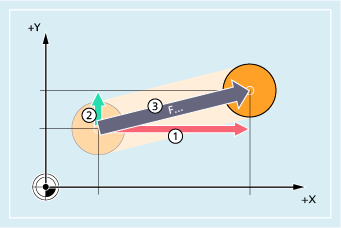
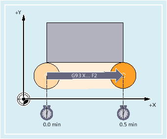
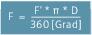

Feedrate for path axes (F)
The path feedrate is generally composed of the individual speed components of all geometry axes participating in the movement and refers to the center point of the cutter or the tip of the turning tool. The feedrate is specified under address F. Depending on the default setting in the machine data, the units of measurement specified with the G commands are either in mm or inch.
F... | Feedrate for traversing motion of the path axes |
① | Traversing motion in the x direction |
② | Traversing motion in the y direction |
③ | Resulting path motion |
One F value may be programmed per NC block. The feedrate unit is defined using one of the G commands G93/G94/G95. The feedrate F acts only on path axes and remains active until a new feedrate is programmed. Separators are permitted after address F.
Examples:
F100 or F 100
F.5
F=2*FEED
Feedrate type (G93/G94/G95)
G commands G93, G94 and G95 are modal. In the event that a switch is made between G93, G94 and G95, the path feedrate value has to be reprogrammed. When machining with rotary axes, the feedrate can also be specified in degrees/min.
Inverse-time feedrate (G93)
The inverse-time feedrate specifies the time required to execute the motion commands in a block.
Unit: rpm
Example:
N10 G93 G01 X100 F2
Means: The programmed path is traversed in 0.5 min.
| Note |
If the path lengths vary significantly from block to block, a new F value should be specified in each block with G93. When machining with rotary axes, the feedrate can also be specified in degrees/min. |
Feedrate for synchronized axes
The feedrate programmed under address F applies to all the path axes programmed in a block but not to the synchronized axes. The synchronized axes are controlled such that they require the same time for their path as the path axes, and all axes reach their end point at the same time.
Limit velocity for synchronized axes (FL)
The FL command can be used to program a limit velocity for synchronized axes. In the absence of a programmed FL, the rapid traverse velocity applies. FL is deselected by the MD assignment (MD36200 $MA_AX_VELO_LIMIT).
Traverse path axis as synchronized axis (FGROUP)
FGROUP is used to define whether a path axis should be traversed with the path feedrate or as a synchronized axis. In helical interpolation, for example, it is possible to define that only two geometry axes, X and Y, are to be traversed at the programmed feedrate. The infeed axis Z is the synchronized axis in this case.
Example: FGROUP(X,Y)
Change FGROUP
The setting made with FGROUP can be changed as follows:
By reprogramming FGROUP: e.g. FGROUP(X,Y,Z)
By programming FGROUP without a specific axis: FGROUP()
In accordance with FGROUP(), the initial setting in the machine data applies. Geometry axes are now once again traversed in the path axis grouping.
| Note |
With FGROUP, axis identifiers must be the names of channel axes. |
Units of measurement for feedrate F
In addition to the geometrical settings G700 and G710, the G commands are also used to define the system of units for feedrates F. In other words:
for G700: [inch/min]
for G710: [mm/min]
| Note |
G70/G71 do not influence feedrate settings. |
Unit of measurement for synchronized axes with limit speed FL
The measurement unit set for F using G command G700/G710 is also valid for FL.
Measurement unit for rotary and linear axes
For linear and rotary axes which are combined with FGROUP and traverse a path together, the feedrate is interpreted in the unit of the linear axes. Depending on the default setting for G94/G95: mm/min or inch/min and mm/rev or inch/rev.
The tangential velocity of the rotary axis in mm/min or inch/min is calculated according to the following formula:
with: | F: | Tangential velocity [mm/min] / [inch/min] |
F': | Angular velocity [deg/min] | |
π: | Circle constant | |
D: | Diameter [mm] / [inch] |
Traverse rotary axes with path velocity F (FGREF)
For machining operations in which the tool or the workpiece or both are moved by a rotary axis, the effective machining feedrate is to be interpreted as a path feed in the usual way by reference to the F value. This requires the specification of an effective radius (reference radius) for each of the rotary axes involved.
The unit of the reference radius depends on the G70/G71/G700/G710 setting.
All axes involved must be included in the FGROUP command to be taken into account in the calculation of the path feedrate.
In order to ensure compatibility with the behavior with no FGREF programming, the factor 1 degree = 1 mm is activated on system power up and RESET. This corresponds to a reference radius of FGREF= 360 mm/(2π) = 57.296 mm.
| Note |
This default is independent of the active basic system (MD10240 $MN_SCALING_SYSTEM_IS_METRIC) and the currently active |
Special situations:
| Program code | |
|---|---|
| N100 FGROUP(X,Y,Z,A) | |
| N110 G1 G91 A10 F100 | |
| N120 G1 G91 A10 X0.0001 F100 |
With this type of programming, the F value programmed in N110 is evaluated as the rotary axis feedrate in degrees/min, while the feedrate evaluation in N120 is either 100 inch/min or 100 mm/min, dependent upon the currently active G70/G71/G700/G710 setting.
| Notice |
Feedrate difference
|
Read reference radius
The value of the reference radius of a rotary axis can be read using system variables:
In synchronized actions or with preprocessing stop in the part program via system variable:
$AA_FGREF[<axis>] | Current main run value |
Without preprocessing stop in the part program via system variable:
$PA_FGREF[<axis>] | Programmed value |
If no values are programmed, the default 360 mm/(2π) = 57.296 mm (corresponding to 1 mm per degree) will be read in both variables.
For linear axes, the value in both variables is always 1 mm.
Read path axes affecting velocity
The axes involved in path interpolation can be read using system variables:
In synchronized actions or with preprocessing stop in the part program via system variables:
$AA_FGROUP[<axis>] | Returns the value "1" if the specified axis affects the path velocity in the current main run record by means of the basic setting or through | |
$AC_FGROUP_MASK | Returns a bit key of the channel axes programmed with |
Without preprocessing stop in the part program via system variables:
$PA_FGROUP[<axis>] | Returns the value "1" if the specified axis affects the path velocity by means of the basic setting or through | |
$P_FGROUP_MASK | Returns a bit key of the channel axes programmed with |
Path reference factors for orientation axes with FGREF
With orientation axes the mode of operation of the FGREF[] factors is dependent upon whether the change in the orientation of the tool is implemented by means of rotary axis or vector interpolation.
In the case of rotary axis interpolation, as is the case with rotary axes, the relevant FGREF factors of the orientation axes are calculated individually as reference radius for the axis paths.
In the case of vector interpolation, an effective FGREF factor, which is calculated as the geometric mean value of the individual FGREF factors, is applied.
FGREF[effective] = nth root of [(FGREF[A] * FGREF[B]...)]
with: | A: | Axis identifier of 1st orientation axis |
B: | Axis identifier of 2nd orientation axis | |
C: | Axis identifier of 3rd orientation axis | |
n: | Number of orientation axes |
Example:
Since there are two orientation axes for a standard 5-axis transformation, the effective factor is, therefore, the root of the product of the two axial factors:
FGREF[effective] = square root of [(FGREF[A] * FGREF[B])]
| Note |
It is, therefore, possible to use the effective factor for orientation axes |